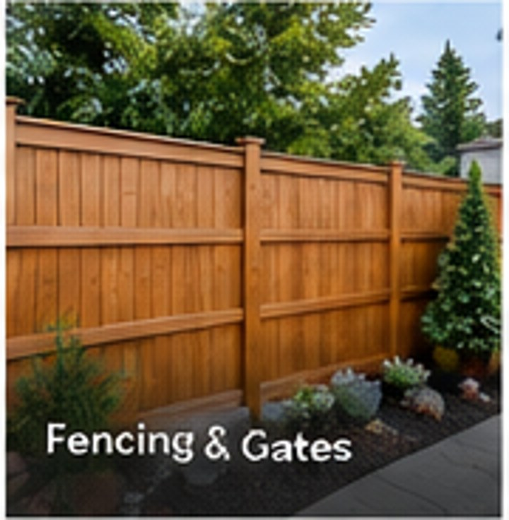

Consult
Tell us what you want to change, your priorities and the current condition of the space.
Privacy, security and curb appeal with sturdy fence and gate construction tailored to the property.
GET A FREE ESTIMATEEvery fences & gates project starts with the existing space, your priorities and a clear scope. We focus on sensible solutions, organized execution and details that hold up after the work is complete.
Before work begins, we confirm the main scope, material responsibilities and project sequence so expectations are clear. During construction, we keep communication straightforward and address changes before they become surprises.
DISCUSS YOUR PROJECT
Tell us what you want to change, your priorities and the current condition of the space.
We define the work, material responsibilities and pricing before construction starts.
Our team completes the agreed work with attention to protection, organization and finish quality.
We review the completed work with you and take care of final agreed details.
A selection of our work. Select a photo to view it in full.


Confirm the fence line, access points, slope and any boundaries that need clarification.
Plan post locations, gate widths and everyday access before selecting the final style.
Discuss wood or other proposed materials, privacy needs and the appearance from both sides.
Yes. We can discuss a stepped or sloped layout and how to address the space at ground level.
Yes. Send a photo and approximate opening width. The condition of the supporting posts affects the scope.
Tell us what you have in mind and we’ll help you figure out the next step.
REQUEST AN ESTIMATE